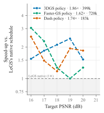

Interactive companion to the paper · Policy for Adaptive Compute-Efficient (PACE) 3DGS training
PACE: a reinforcement-learning agent that runs Gaussian Splatting training
Gaussian Splatting trainers follow a hand-tuned schedule of densification, pruning, opacity resets and learning-rate decay that spends compute blindly and does not transfer between scenes or trainers. PACE puts an RL agent in charge of that schedule: at the end of every short block of iterations it reads a compact 45-number summary of the optimisation and decides when to grow, prune and reset and how fast to learn. Rewarded for quality reached early, it reaches every reconstruction-quality target sooner than the fixed schedule on 3DGS, Faster-GS and DashGaussian, with no per-scene or per-trainer hyperparameter tuning, and transfers zero-shot to LeGS.
Everything on this page is produced by the already-trained policies used in the paper: real rollouts, real per-block decision logs, and the actual Gaussian point clouds saved along training. Nothing was retrained for the demo.
same quality at 30k with 2× fewer Gaussians
grows the model further, +1.5 dB at 30k
exceeds the fixed schedule with 6.5× fewer Gaussians
all three policies, on a backend none was trained on
Geometric-mean time-to-target speed-ups on the held-out Tanks & Temples train scene, single rollout each.
How the controller works
Training is split into blocks of 50 to 200 gradient steps. At each block boundary the policy observes the solver and emits a mixed action that configures one block of otherwise-standard training on a pluggable backend. Only the backend's own densifier, pruner and optimiser ever touch the Gaussians: the policy controls the model indirectly, by deciding when those modules fire and how strongly.

Why it accelerates
Early in training, growing the model wastes steps on Gaussians that never get optimised; later, refusing to grow starves the reconstruction of capacity. Where that balance lies depends on the scene and on how expensive a Gaussian is on the given trainer. The policy learns a state-dependent schedule instead of a fixed one.
Same interface, different backends
The state carries no backend-specific feature. The same controller architecture was trained once per backend and learns a different, interpretable schedule for each: compact models on 3DGS and Dash, a larger one on Faster-GS whose rasteriser makes Gaussians cheap. The decision logs below make these differences visible.
What is (and is not) controlled
The policy never edits a Gaussian directly. Split, clone, prune and reset are the backend's standard operators executed under policy-chosen settings, with safety rails (prune-fraction cap, count and VRAM limits) inside the training operator.
Results from the paper


Per-block decisions and population statistics behind Figure 3 (appendix figure)


Figures are exported from the manuscript sources; the numbers behind them are the same rollouts that drive the interactive sections of this page.
Watch the reconstruction converge
Both panels show the same scene after the same wall-clock training time, from the same camera: the controller on the left, that backend's fixed schedule on the right. Scrub the timeline, orbit the point cloud, switch backend or scene, and read the decision the agent took at that moment. The Gaussians are the actual training states saved at 5, 15, 30, 60 and 120 s, for four real scenes the controllers never trained on: three Tanks & Temples scenes (train, ignatius, caterpillar) and the unbounded Mip-NeRF 360 stump.
Viewer notes: snapshots are quantised for the web (16-bit positions, 8-bit colour, opacity, scale and rotation) and use only the view-independent colour band, so fine specular detail differs slightly from the CUDA renderer; snapshots above 300k Gaussians are thinned to their 300k most visible splats, the counts shown are the true ones. Backgrounds are black because unbounded scenes have no sky model.
The same view, over time
Renders from the saved training states with the reference CUDA rasteriser (full SH colour), at the held-out camera used for the PSNR numbers. "Not reached" means the run had already hit its iteration cap before that wall-clock time.
How the Gaussians evolve along the iterations
The controller never touches a Gaussian directly, yet the population it produces looks different from the fixed schedule's. Below, for the scene and backend selected in the viewer: the Gaussian centres seen from above at each snapshot, the count together with how many Gaussians every block added or pruned, and the opacity, size and shape statistics of the population over training. Switch to the full 30k-iteration rollout to see the whole densification phase and its end.
Thumbnails are opacity-weighted density images of the Gaussian centres in a scene-fixed top view (log scale). Added/pruned counts are the backend's own densify and prune events inside each block; the line is the total count after the block. Statistics are computed on the full saved Gaussian state, not on the thinned web copy.
What the controller decides, per scene and per backend
Every rollout logs the decoded action of every block. The overview ranks the six evaluated scenes by speed-up; pick a scene to see how the three controllers schedule densification, pruning and learning rates over 30k iterations, how the model size evolves, and when each PSNR target is reached versus the fixed schedule. Hover any block to read the full action. These are the exact rollouts behind the paper's tables.
Transfer across backends
Because the state and action set are backend-agnostic, a controller trained on one trainer can be dropped onto another. The matrix shows every trained-on / runs-on pair we evaluated, including LeGS, which learns its own per-Gaussian density control and on which no controller was ever trained.
Fewer training views
Capture setups rarely have hundreds of images. This ablation re-runs the time-to-target protocol on the 3DGS backend with the frozen 3DGS controller while keeping only 25, 50 or 100 of the training cameras (farthest-point subset of the capture, same subset for both methods; the held-out test cameras are unchanged). Fewer views change what the fixed schedule can reach and how fast, so the question is whether the learned schedule still gets there first.
About this demo
Where the data comes from
- Policies: the frozen checkpoints evaluated in the paper — one PPO controller per backend (3DGS, Faster-GS, DashGaussian), each trained on a pool of ten real scenes (Tanks & Temples, Deep Blending, Mip-NeRF 360) and selected by an acceleration-aware probe. None was retrained for this page.
- 3-D snapshots: the Gaussian state dumped the first time training crossed 5, 15, 30, 60 and 120 s of wall-clock, for agent and fixed schedule alike (
scripts/save_gaussian_snapshots.py), then quantised for the browser. - Decision logs, curves and time-to-target: the evaluation protocol's per-block logs (
scripts/eval_protocol.py): a 30k-iteration rollout per method, test PSNR sampled along the way, first-crossing times interpolated per target. - Hardware: all timings on one NVIDIA RTX 3090; the controller adds 5–7 ms per block (≤0.35% of training time).
Caveats
- Single rollout per cell; the paper discloses this too. Wall-clock times include the backend's own densification cost.
- Unbounded Mip-NeRF 360 scenes drive the fixed schedule into the 3M-Gaussian safety cap within a few thousand iterations, which is why several baselines end early there.
- The Dash controller under-builds on unbounded scenes it never saw (few Gaussians, lower PSNR): an honest limitation visible in the stump decision log.
- The web renderer is an approximation of the CUDA rasteriser (see the viewer notes); PSNR numbers everywhere come from the reference renderer.
Reproduce
Repository: github.com/romanjacome99/Agentic3DGS. The page is static; website/tools/build_site_data.py rebuilds the data bundle from the experiment outputs.
© Román Alejandro Jácome Carrascal. Built as a companion to “PACE: A Reinforcement-Learning Agent for Accelerated 3D Gaussian Splatting”.